Owner's manual for the Hue Bridge, Hue Light and Hue Scene drivers. This page is the full manual; the Hue Light and Hue Scene devices carry a short page of their own that points back here.
This driver connects one Philips Hue bridge to your Control4 system over your own home network; no cloud account is involved and nothing leaves the house. Each Hue light you choose becomes an ordinary Control4 light that you can switch, dim, colour and program like any other light in the project. Changes made in the Hue app or with Hue switches and dimmers show up in Control4 within a second or two, because the driver listens to the bridge's event feed (the bridge's running report of everything that changes) rather than asking it over and over. Hue scenes, the saved looks you create for a room in the Hue app, can become Control4 dimmers: turning one on plays the scene, turning it off turns that Hue room or zone off, and its slider brightens or dims the room or zone while keeping the scene's look. The driver never adds, renames, moves or removes a Control4 device on its own, with two small exceptions it tells you about: the one-time Map Rooms By Name it runs when it first sees the bridge's rooms (chapter 6), and the re-adoption of a device that announces a light the bridge already knows (8.6). Every other change is a button you click in Composer, and the driver reports in plain words what it did.
Two words this manual uses throughout: a light is a Hue light, the bulb, strip or lamp as the Hue app lists it; a Hue Light, with a capital L, is the Control4 device that stands for it. Navigators is Control4's word for everything you control the house from: touch screens, remotes and the Control4 app. A short glossary of the other terms is at the end of this manual.
| Device | How many | In Composer | On Navigators |
|---|---|---|---|
| Hue Bridge | One | A device in any room you like (an equipment room or the room the bridge sits in). Its Properties page shows the status of the connection and the counts of lights and scenes; its Actions tab holds every command described in this manual. | Not shown. The bridge has no user interface of its own. |
| Hue Light | One per Hue light you import | A light in a room, with the Hue light's name. Normally created only by the bridge's Add Light and Import All New Lights actions; one added by hand has to be connected and linked (8.6). | Appears on the room's Lighting page like any dimmer: a tile for on and off and a brightness slider; lights that can do colour or colour temperature also get the colour controls. |
| Hue Scene | One per Hue scene you import | A dimmer in a room, named after the Hue scene (with the zone's name in front for a zone scene). Created only by Add Scene and Add All Scenes Of Room. | A tile with a slider on the room's Lighting page. On plays the scene; off turns the scene's Hue room or zone off; the slider brightens or dims the room or zone, keeping the scene's look. |
In Composer's System Design tree the Hue Bridge sits in its room like any other device, and the lights and scenes it creates sit in the rooms you chose for them. You can drag a Hue Light or Hue Scene to another room at any time; that does not disturb its link to the bridge.
Hue and Control4 organise a home differently. The table shows what each Hue construct becomes on the Control4 side, and the actions that create the link.
| In Hue | In Control4 | How |
|---|---|---|
| The Hue bridge | The Hue Bridge device | You add it once and pair it (chapter 4). Everything else is created from its Actions tab. |
| A light (a bulb, a strip, a lamp) | A Hue Light device: a Control4 light with dimming, and with colour and colour temperature when the light supports them | Add Light (one at a time, into a room you pick) or Import All New Lights (every new light into the room its Hue room maps to). A Hue fixture that contains several lights gives one Hue Light per light, each named as the Hue app names that light. |
| A Hue room or zone | A mapping to a Control4 room, listed in Room Mappings (chapter 6) | Map Rooms By Name (automatic for identical names, once) and Set Room Mapping (by hand). The mapping decides which Control4 room a newly imported light or scene lands in; it never moves anything afterwards. A zone is a group of lights that may sit in several rooms; Hue scenes belong to a room or a zone. |
| A scene | A Hue Scene dimmer device | Add Scene or Add All Scenes Of Room. ON plays the scene; OFF turns the scene's room or zone off; the slider brightens or dims the room or zone. |
| The names of lights and scenes | The device names in Composer | Given once when the device is created. Afterwards the Composer name is yours; a difference is only pointed out in Attention and resolved with Adopt Hue Names or Accept Names As They Are (or Adopt Hue Name on one device). |
| Which light is which | The link between a device and its Hue light | Kept by the bridge, by the light's Hue identity (the long code the bridge gives every light). A replaced light is re-pointed with Re-link Device To Light; a device is released with Forget Light; a device you connected yourself is picked up with Link Devices. |
Everything in this manual happens in Composer Pro, connected to your controller. The places it refers to:
Are you sure you want to delete the item '…'? and deletes it on Yes.shared queue, Stream Timeout (s) is capped at 60 and a command can wait up to a minute behind the feed. If your bridge has such an address, give it another one in the router. Addresses are IPv4 only: four numbers and dots, no name.hue_bridge.c4z, hue_light.c4z and hue_scene.c4z from the same build. Each build has a number (116, 125, …) that the three files share and that the devices show as Driver Version once installed; the developer tells you the number with the files.Update Succeeded: Drivers or agents were successfully added: hue_bridge.c4z, hue_light.c4z, hue_scene.c4z.Hue Bridge. The search also finds Control4's own Hue drivers; the one you want is the Hue Bridge by manufacturer Philips Hue with the model text Hue Bridge (CLIP v2). Double-click it: one Hue Bridge device appears in the room.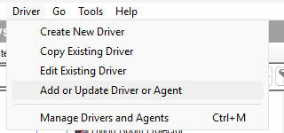
Composer's Driver menu with Add or Update Driver or Agent… highlighted: the one route used both for installing and for updating.
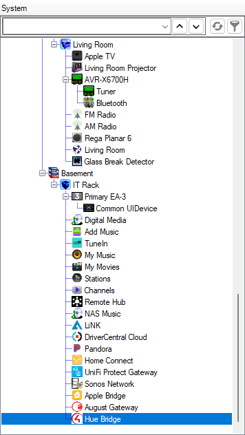
The System Design tree with the Hue Bridge selected in its room; look for the dark bridge-shaped icon, which tells it apart from Control4's own Hue driver. The device's tabs open to the right of the tree.
Select the bridge and open its Properties tab. Before pairing the page reads like this:
116.Enter the bridge IP address.Not paired.0 imported; Scenes: 0 imported.None; Room Mappings: None; use Map Rooms By Name.0; Stream Timeout (s): 600; Stream Watchdog (s): 300.Chapter 4 fills in the rest; chapter 5 explains every row.
Updates go through the same Driver » Add or Update Driver or Agent… menu with the new files. Composer answers Update Succeeded: Drivers or agents were successfully updated: hue_bridge.c4z, hue_light.c4z, hue_scene.c4z and pushes the new version to every existing device at once: the bridge and every Hue Light and Hue Scene show the new Driver Version within a minute, the bridge restarts and its event feed is back within seconds, and the pairing, the lights and the scenes are untouched.
Not bound to a Hue Bridge until connected and linked again by hand (8.6). Updating in place keeps everything.If you ever need to reload the same version, right-click the bridge and choose Update Driver; Composer asks Versions are equal. Do you want to overwrite…? and reloads it on Yes. For anything newer, use the menu route above.
Going back to an older build uses the same menu with the older files. This has not been tested; expect the devices to keep their pairing and links as they do on an update, and read Status and Lights afterwards rather than assume.
Release and development builds. The developer sometimes makes development builds that fetch their code from a server on the home network through the Dev Server property. Only install the files of a release build; a release ignores Dev Server whatever it contains, so a bridge that reacts to that property is running a development build and should be replaced with the release files through the menu above.
Open the Hue app on your phone: Settings » My Hue system » tap the bridge. Its IP address is listed there, for example 192.168.1.50. Reserve that address for the bridge in your router if you have not done so; the driver has to be told by hand when the address changes. If the address has no number below 8, change it in the router first (chapter 3, "What you need").
On the bridge's Properties page, click in the value cell of Bridge IP Address, type the address, for example 192.168.1.50, and click the row's Set button. Status changes to Not paired: press the link button, then run Pair Bridge.
The address must be four numbers from 0 to 255 separated by dots, written without leading zeros (192.168.1.50, not 192.168.001.050), and not a name. Before pairing, an invalid entry is simply ignored: Status keeps saying Enter the bridge IP address; correct the text and click Set again. While paired, an invalid entry is not harmless: the driver drops the stored address, Status returns to Enter the bridge IP address, the event feed stops (Event Stream reads Stopped) and the lights stop following the bridge until a valid address is set again. The pairing itself is kept, so a corrected address brings everything back within seconds.
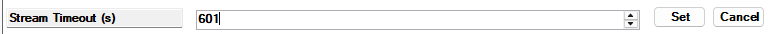
A property row after editing: the Set and Cancel buttons at the right end of the row, and only Set hands the change to the driver.
Pairing: contacting bridge, then Pairing: found BSB003 001788fffe123abc, requesting key (the model and the bridge's identifier; a square version 2 bridge reports BSB002), then Paired. Bridge ID and Bridge Model fill in. The pairing is a key the bridge issued to this controller; the driver stores it and never shows it.If you clicked before pressing the button, or the 30 seconds had passed, then Status reads Press the link button on the bridge, then run Pair Bridge again; press the button and click Pair Bridge once more. If Status reads Enter the bridge IP address first, step 2 was skipped. Three failures start with Pairing failed: followed by the reason: Pairing failed: Bridge not reachable: … means nothing answered at that address (check the address in the Hue app and that bridge and controller are on the same network); Pairing failed: Pairing request failed: … means the bridge answered the first question but not the pairing request itself (try again; if it persists, check that the address really is a Hue bridge); Pairing failed: bridge error … means the bridge refused with an error of its own (try again after a moment, and after a restart of the bridge if it persists).
Right after Paired the driver opens the bridge's event feed. Event Stream shows Connecting, then Connected since 14:03:12, and from the first event onwards Connected since 14:03:12, 12 containers, last 14:03:40; a container is one bundle of changes the bridge sent, and Events Received counts the same bundles. Within a few seconds the driver has done its first full read of the bridge's lights, rooms, zones and scenes:
47 on bridge, 0 imported, 47 new, 0 missing, 0 unbound, 0 deleted and Scenes 125 on bridge, 0 imported, 0 missing, 0 unbound, 0 deleted.47 new lights on the bridge: Bar Bottom [Kitchen] #80, Bar Left [Kitchen] #81, Bar Right [Kitchen] #82 +44 more (Add Light or Import All New Lights).Nothing has been added to the project yet. Chapters 6 and 7 are the next steps.
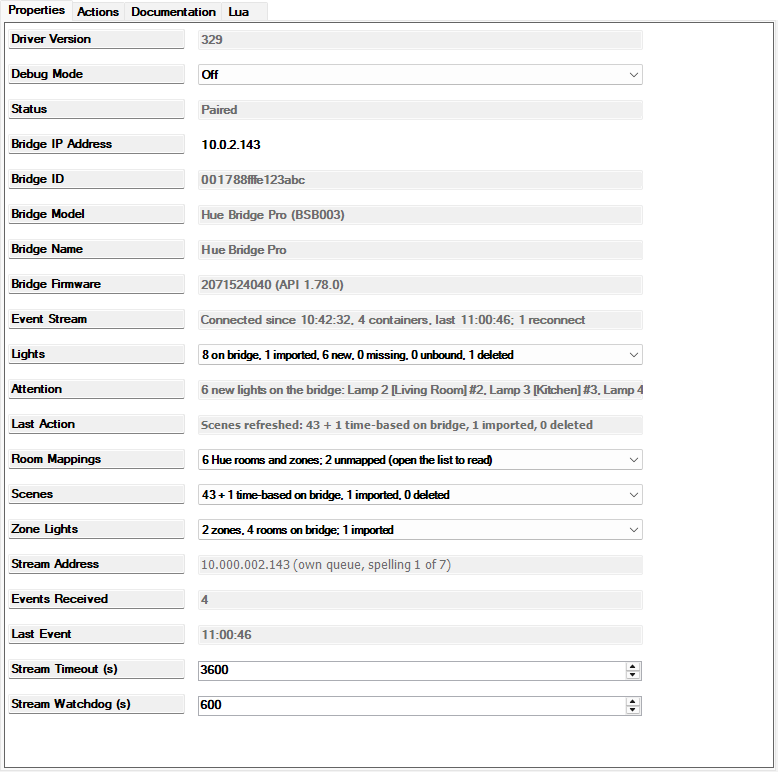
The Hue Bridge Properties page after pairing. Look at Status Paired, Bridge ID and Bridge Model filled in, Event Stream Connected since …, and the Lights and Scenes count lines. The exact Stream Address text depends on your bridge's address (chapter 5). Chapter 5 explains every row.
Test Connection on the Actions tab asks the bridge one question and writes the answer to Status: briefly Testing: GET /clip/v2/resource/bridge via 192.168.1.50, then Test OK: HTTP 200 via 192.168.1.50 in 0 s, bridge 001788fffe123abc. The three-digit numbers in these texts are the bridge's reply codes: 200 means the bridge answered properly, 401 or 403 that it refused the pairing key, 404 that the thing asked for no longer exists. Three failures are possible: Test failed: key rejected (HTTP 401 or 403). Re-pair with Pair Bridge (the bridge no longer accepts this pairing, see 8.8; the text shows whichever of the two codes the bridge answered), Test failed: bridge reports ID 001788fffe456def, expected 001788fffe123abc (a different bridge answers at that address) and Test failed: … with the network error (nothing answers). When not paired it says Not paired. The test leaves the normal connection alone.
Forget Pairing removes the stored pairing from the controller and stops the event feed. Status returns to Not paired: press the link button, then run Pair Bridge (the address is kept), Event Stream reads Stopped, Bridge ID, Bridge Model, Stream Address and Last Event are cleared and Events Received returns to 0. The Hue Light and Hue Scene devices stay in the project and keep their links; they simply stop following the bridge until you pair again. Pair with the same bridge and everything resumes (the links are expected to survive; this has not been exercised on the house system, so read Lights afterwards). Forget Pairing is never required: Pair Bridge simply replaces the stored pairing, with the same bridge or a different one, because the driver does not check the bridge's identity when pairing. It is a tidy way to make the bridge's rows blank before pairing with a replacement bridge; remember that after pairing with a different bridge every Hue Light and Hue Scene reads Gone until re-linked (8.8).
If the bridge is unplugged, rebooting or unreachable then Event Stream reads Disconnected: transfer error 28: …. Reconnecting in 1 s (transfer error 28 is the controller's "no answer in time"; the reason varies) and the driver retries with a growing pause, doubling up to 60 seconds between attempts. As soon as the bridge is back, Event Stream reads Connected since … again and the driver does a full read of every light and scene, so Control4 catches up with whatever happened while it was blind. You do nothing. Meanwhile:
If the bridge receives a new address from the router then the feed drops and keeps failing: Event Stream cycles through Disconnected: …. Reconnecting in 60 s and Connecting, and Test Connection fails with a network error. Look up the new address in the Hue app, type it into Bridge IP Address and click Set. The pairing is kept, because it belongs to the bridge and not to the address: Status stays Paired and the feed reconnects within seconds. Then reserve the address in the router so it does not happen again.
In the order Composer shows them. "You" means you may edit it (remember the Set button); "read-only" means the driver writes it; "developer" means it exists for the developer's diagnostics and should be left alone.
| Property | Who | What it shows or does |
|---|---|---|
| Driver Version | read-only | The build number of the installed driver, for example 116. The three drivers of one build share it. |
| Debug Mode | developer | Off (default) or On. On makes the driver write many more lines to its Lua output (the Lua tab). Turn it on only when asked for diagnostics, and off again afterwards. |
| Status | read-only | The pairing state: Enter the bridge IP address, Not paired: press the link button, then run Pair Bridge, Paired, the pairing steps of chapter 4, and the results of Test Connection and the diagnostics actions (chapter 12). |
| Bridge IP Address | you | The bridge's address on your network, for example 192.168.1.50; four numbers and dots, no name. The only setting the driver needs from you. |
| Bridge ID | read-only | The paired bridge's identifier, 16 letters and digits such as 001788fffe123abc; blank while not paired. Test Connection compares the answering bridge against it. |
| Bridge Model | read-only | BSB003 for a Hue Bridge Pro, BSB002 for the square version 2 bridge. |
| Event Stream | read-only | The state of the event feed: Not paired, Waiting for IP address, Connecting, Connected since 14:03:12, Connected since 14:03:12, 128 containers, last 14:40:01, Disconnected: <reason>. Reconnecting in 2 s or Stopped. A reconnection every few minutes in a quiet house is normal (see Stream Watchdog). |
| Lights | read-only | The counts: 47 on bridge, 46 imported, 1 new, 0 missing, 0 unbound, 1 deleted; just 0 imported before the first full read of the bridge. Chapter 7 explains each number. |
| Attention | read-only | None, or one item per kind of thing waiting for you, joined by semicolons: new lights, missing lights, unbound devices, two devices claiming one light, name differences, mappings to a deleted Control4 room, lights offline for more than a day, and the scene versions of these. Each item names at most three things and then says +N more; most end with the action that resolves them. Chapter 12 lists them all. |
| Last Action | read-only | The result of the last button you clicked on the Actions tab, in words, for example Added Porch #53 to Patio (device 2051). Every click ends here, whether it worked or not. The (device 2051) in the bridge's texts is the device's own number inside the driver; Composer shows the number one higher for the same device, and so do the device's own actions (Renamed device 2052 to …), so the two numbers for one device always differ by one. |
| Room Mappings | read-only | Every Hue room and zone with the Control4 room it maps to: Kitchen → Kitchen; Office → (unmapped); Bedside Lights (zone) → Master Bedroom, or None; use Map Rooms By Name. Chapter 6. |
| Scenes | read-only | The scene counts: 125 on bridge, 3 imported, 0 missing, 0 unbound, 0 deleted; 0 imported before the first full read. Chapter 9. |
| Stream Address | developer, read-only | Which spelling of the bridge's address the event feed uses and whether the feed has a connection queue of its own (chapter 3, "What you need"). For 192.168.1.50 it reads 192.168.001.50 (own queue, no second spelling to rotate; commands use 192.168.1.50); an address with several numbers below 8, such as 192.168.5.20, reads 192.168.005.020 (own queue, rotating over 7 spellings; commands use 192.168.5.20). An address with no number below 8 reads 192.168.10.50 (shared queue with commands: no octet below 8 to pad; stream timeout capped at 60 s), and a start-up check that failed reads … (shared queue with commands: self-check via … failed: …; stream timeout capped at 60 s): the feed then shares the commands' queue and Stream Timeout (s) is capped at 60 whatever it says. Informational only. |
| Events Received | read-only | How many bundles of changes the feed has delivered since it was last set up (a driver start, a change of the stream settings or the address, pairing, or a Connection Test). It rises whenever something changes on the Hue side; a good sign that the feed is alive. |
| Last Event | read-only | The time of the last event, for example 14:40:01. |
| Diagnostic Server | developer | The address of a test server the developer uses with Connection Test. Leave it blank. |
| Dev Server | developer | Used only by development builds; the released driver ignores it. Leave it blank. |
| Stream Timeout (s) | you (rarely) | How long one connection to the event feed may live before the driver deliberately reopens it and does a full read; 30 to 86400 seconds, default 600. Each reopening is harmless. On an address with no number below 8 the driver caps it at 60 whatever you set (see Stream Address). Leave the default unless the developer suggests otherwise. |
| Stream Watchdog (s) | you (rarely) | After this many seconds without any event the driver assumes the feed has gone quiet for a bad reason and reopens it; 0 to 3600 seconds, default 300, 0 switches the watchdog off. The bridge sends nothing while nothing changes, so in a quiet house Event Stream will show a fresh Connected since time every five minutes; that is expected. |
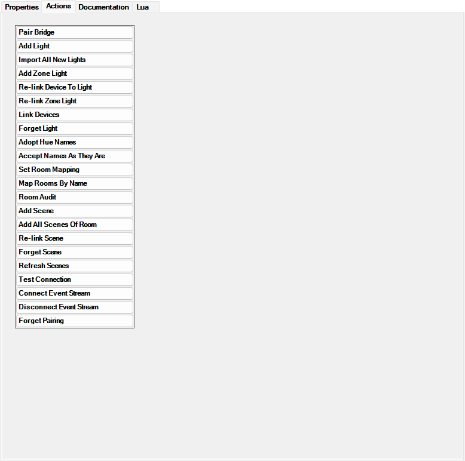
The bridge's Actions tab: the 23 actions in the order of chapter 13's quick reference, Pair Bridge at the top and Forget Pairing at the bottom. One click on a button runs it. Actions with choices open a dialog; the rest run at once and report in Last Action or Status.
Actions that take choices open Composer's Action Parameter List dialog: one row per choice, each with a … button that opens a Select list, and OK and Cancel. In the Select list, click an entry and then its OK; the dialog's OK stays greyed out until every row has a choice. The dialog remembers your previous choices for that action, so always look at every row before clicking OK; a remembered choice is as good as a new one to the driver.
Before importing anything, tell the driver which Control4 room each Hue room stands for. The mapping has one job: when a light or scene is created, it goes into the Control4 room its Hue room maps to, unless you pick a room yourself. The mapping never moves an existing device, and changing a mapping later changes only where future additions land. That is deliberate: Control4 offers no way for a driver to move a device, and a device you dragged somewhere on purpose should stay there.
Room Mappings lists every Hue room, then every Hue zone (marked (zone)), each with an arrow to its Control4 room:
Dining → Dining; Kitchen → Kitchen; Office → (unmapped); Upstairs Hallway → (Control4 room gone); Bedside Lights (zone) → Master Bedroom; Mini Bar (zone) → (unmapped)
(unmapped): no Control4 room chosen yet. Lights in that Hue room are skipped by Import All New Lights and need a room picked in Add Light. A room or zone you create in the Hue app appears here as (unmapped) by itself; map it with Set Room Mapping or click Map Rooms By Name.(Control4 room gone): the mapping points at a Control4 room that has since been deleted from the project. Attention says 1 room mapping points at a Control4 room that no longer exists: Upstairs Hallway (Set Room Mapping); fix it with Set Room Mapping.Old Nursery (deleted in Hue) → Office; remove it with Set Room Mapping and (no mapping), or leave it, it does no harm.None; use Map Rooms By Name: nothing is mapped yet.Mappings are kept by identity, not by name: renaming a Hue room in the Hue app or a Control4 room in Composer leaves its mapping in place, and the line simply shows the new name.
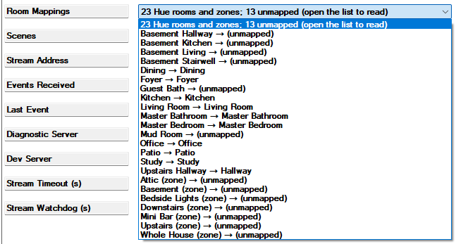
The Room Mappings row: Hue rooms and zones on the left of each arrow, Control4 rooms, (unmapped) or (Control4 room gone) on the right. The row clips a long value; Last Action after Map Rooms By Name lists the same mappings in full.
To read all of a long value, widen the Properties pane, or click Map Rooms By Name and read its result in Last Action.
Map Rooms By Name maps every Hue room or zone to the Control4 room with exactly the same name (capitals and spaces at the ends do not matter) and leaves everything else alone: it never changes a mapping that exists, and it skips a name that two Control4 rooms share. The driver runs it once by itself the first time it reads the bridge's rooms after installation; you can click it again whenever you have created or renamed rooms on either side. Last Action reports, for example:
Mapped 9: Dining → Dining, Foyer → Foyer, Kitchen → Kitchen, …; no Control4 room named: Basement Hallway, Upstairs Hallway, Bedside Lights (zone), Mini Bar (zone); ambiguous: Hallway (2 Control4 rooms are named Hallway)
and on a later click Nothing new to map; 9 already mapped (kept). If it reports Nothing mapped: no Hue rooms fetched yet (connect the event stream and try again), the bridge has not been read yet: wait for Event Stream to say Connected since. Nothing mapped: no Control4 rooms found in the project means Composer's room list was not available at that moment; try again.
Set Room Mapping maps one Hue room or zone by hand, or removes a mapping. Its dialog has two rows:
Kitchen → Kitchen, Upstairs Hallway → (unmapped), Bedside Lights (zone) → Master Bedroom. Pick the one to change.(no mapping) first, then every Control4 room as Floor / Room, for example Second / Hallway. Where two rooms share a name the room's number is appended so you can tell them apart.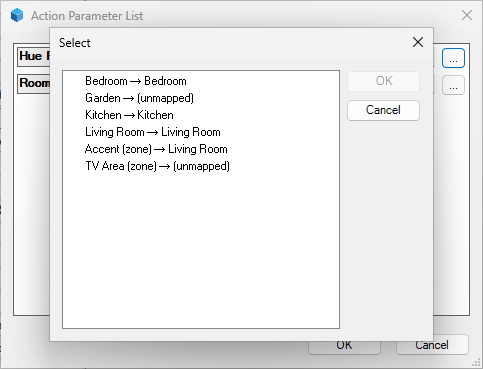
The Set Room Mapping dialog with the Hue Room list open: rooms first, zones after them, each with its current mapping after the arrow.
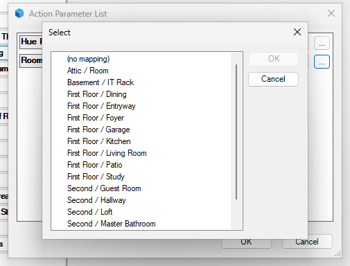
The same dialog with the Room list open: (no mapping) at the top, then the project's rooms as Floor / Room.
Example: pick Upstairs Hallway → (unmapped) and Second / Hallway, click OK. Last Action reads Mapped Upstairs Hallway → Hallway and Room Mappings updates. To remove a mapping, pick the Hue room and (no mapping): Removed the mapping for Mini Bar (zone), or No mapping for Mini Bar (zone) to remove when there was none. If you click OK without choosing, Last Action says Not mapped: pick a Hue room first or Not mapped: pick a Control4 room or (no mapping); a room deleted since the list was built gives Not mapped: Control4 room 1019 does not exist. Before the bridge has been read, the Hue Room list holds only (no Hue rooms fetched yet; connect the event stream).
Zones. A Hue zone can be mapped like a room. A light's default room always comes from its Hue room (a light belongs to exactly one room in Hue), so a zone mapping is used only for scenes: Add Scene and Add All Scenes Of Room put a zone's scenes into the zone's mapped room. For example map Bedside Lights (zone) to the Master Bedroom, and its scenes land there. A light that is in a zone but in no Hue room counts as (no Hue room): Import All New Lights skips it and Add Light needs a room picked for it.
Room Audit compares, for every imported light, the Control4 room it is in with the room its Hue room maps to, and writes the differences to Last Action as a to-do list:
2 of 23 are not in the room their Hue room maps to: Bar Left is in Living Room; Hue says Kitchen → drag it to Kitchen in Composer if you want it there; Desk Lamp is in Hall; Hue says Office → drag it to Office in Composer if you want it there
Nothing is moved for you; if you agree with a line, drag the device to that room in the System Design tree, then run the audit again and the line disappears. When everything agrees it reads All 23 linked lights in mapped Hue rooms are in the rooms their Hue rooms map to (the number is how many lights were checked; with a single light, All 1 linked light in a mapped Hue room is in the room its Hue room maps to). When no imported light is in a mapped Hue room it reads Nothing to audit: no linked light is in a mapped Hue room; before any mapping exists, No room mappings; use Map Rooms By Name or Set Room Mapping first. A line ending in mapped to a Control4 room that no longer exists (Set Room Mapping) means the mapping, not the light, needs fixing. A tail of ; 1 not found in the project means Composer's device list did not include one of the lights at that moment (usually a device being deleted); run it again later. Room Audit unavailable: the project lookup returned nothing (see the Lua output) means Composer's project information was not available; try again later. Running the audit changes nothing, so it is also a harmless way to make the bridge refresh its Attention line (see 8.2).
If you move a light to another Hue room in the Hue app, its Hue Room property follows within seconds; the Control4 device stays where it is, and the next Room Audit lists it until you drag it or decide not to.
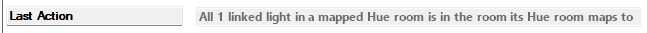
Last Action after a Room Audit: one line per light that sits in a different Control4 room than its Hue room suggests, each ending in the room to drag it to. The driver only reports; you drag.
Two actions create Hue Light devices. Both create each device already connected to the bridge, named as in the Hue app, with its capabilities (dimming, colour, colour temperature) set from what the light reports, and with its current state. Both refuse to create a second device for a light that already has one, so clicking twice is safe.
Import All New Lights adds every light on the bridge that has no device yet, one at a time (under a second per light, so about a minute for a whole house), each into the Control4 room its Hue room maps to. Two kinds of light are skipped on purpose and named in the result: lights with no mapped room (their Hue room is not mapped, is mapped to a Control4 room that no longer exists, or they are in no Hue room at all), and lights whose device you deleted in Composer (8.4 explains why). Last Action reads, for example:
Added 2 new lights: Porch #53 to Patio (device 2051), Hall Lamp #54 to Hallway (device 2052); skipped 3 with no mapped room (Set Room Mapping or Add Light): Attic Lamp #60 (Hue room Attic not mapped), Workbench #61 (Hue room Garage mapped to a Control4 room that no longer exists), Spare Bulb #62 (no Hue room); skipped 1 deleted in Composer (Add Light re-creates one): Vanity 3 #92 (deleted 2026-10-22)
When there is nothing to do it reads No new lights on the bridge (47 on bridge, 47 imported); when every new light was skipped, Added no lights; skipped …. If the bridge could not be read it reads Import failed: … with the reason, and an import that lost the bridge halfway ends in …; stopped early: …; wait for Event Stream to say Connected since and click again, it carries on where it stopped. AddDevice failed for 2: … names lights whose device Composer could not create (chapter 12). While an import or a full read is running, any other click is refused with Busy: importing; try again in a moment or Busy: resyncing; try again in a moment (resyncing is the driver's word for a full read); wait a few seconds, or up to a minute during a whole-house import, and click again.
Add Light adds one light into a room you choose. Its dialog has two rows:
Name [Hue room] #number, for example Porch [Patio] #53. The number is the light's number on the bridge; it tells two lights of the same name apart and appears in every text about that light. A light in no Hue room has no bracket: Spare Bulb #62. A light that looks like the replacement of a missing one is listed first with a hint, Porch [Patio] #53 (looks like Porch #12, device 2051; re-link?); lights whose device you deleted in Composer come last, as Vanity 3 [Master Bathroom] #92 (deleted from Composer 2026-10-22). When every light is imported the list holds only (every light on the bridge is imported); before the bridge has been read, (no lights fetched yet; connect the event stream).(mapped room) first, then every Control4 room as Floor / Room, for example First Floor / Kitchen. Pick (mapped room), like any other entry, to use the Room Mappings entry of the light's Hue room; pick a room to put the light there regardless of the mapping.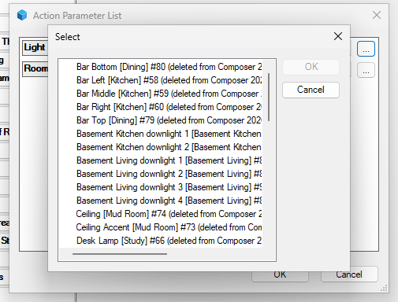
The Add Light dialog with the Light list open: each entry is Name [Hue room] #number; lights deleted from Composer are listed last with the date. The row's inner OK is greyed out until an entry is clicked.
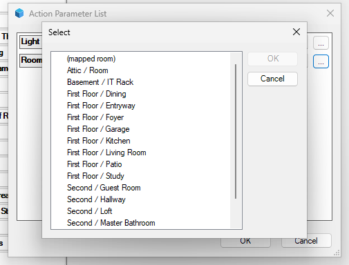
The same dialog with the Room list open: (mapped room) first, then Floor / Room rows.
Click OK. Last Action reads Added Left Bedside Light #46 to Master Bedroom (device 1142) and the device appears in that room in the System Design tree within a second. If you pick (mapped room) for a light that has no mapped room then nothing is created and Last Action explains which case it is: Not added: Porch #53: Hue room Patio not mapped; pick a room, or Set Room Mapping first, Not added: Spare Bulb #62: no Hue room; pick a room, or Set Room Mapping first or Not added: Porch #53: Hue room Patio mapped to a Control4 room that no longer exists; pick a room, or Set Room Mapping first; pick a room explicitly, or fix the mapping first. A light that already has a device is refused with Not added: Porch #53 is already imported (device 2051); an empty choice with Not added: pick a light first; a room deleted since the list was built with Not added: Control4 room 1019 no longer exists; a light that left the bridge since the list was built with Not added: light … is not on the bridge (connect the event stream and try again).
(mapped room) again whenever you want the mapping rather than the room you chose last time.The new device goes into the room you picked (or the mapped room) and takes the light's name from the Hue app, for example Left Bedside Light; for a fixture with several lights, each device gets the name of its own light as the Hue app shows it under the fixture. From that moment the Composer name is yours: rename it as you like, and move it to another room as you like; neither touches the link to the Hue light. If the Hue name changes later, Attention will mention it (8.2), nothing more. Its Connections view shows the light's Hue Bridge input already connected to the bridge's Hue Lights output; you never have to make that connection for a device the bridge created. The device's properties are described in chapter 10, and what it does on Navigators and in programming in chapter 11. After an import, choose File » Refresh Navigators so the new lights appear on the touch screens.
Lights reads 47 on bridge, 46 imported, 1 new, 0 missing, 0 unbound, 1 deleted:
| Field | Meaning | What to do |
|---|---|---|
47 on bridge | Lights the bridge currently has. | Nothing. |
46 imported | Hue Light devices the bridge is managing (whatever their state). | Nothing. |
1 new | Lights on the bridge without a device, not counting lights whose device you deleted in Composer. | Add Light or Import All New Lights, or leave them out. |
0 missing | Devices whose light has disappeared from the bridge (deleted or replaced on the Hue side). The device itself reads Gone from the Hue bridge: "missing" in the counts and "gone" on the device are the same state. | Re-link Device To Light or Forget Light (8.3). |
0 unbound | Devices whose connection to the bridge was removed in Composer. | Connect it again in Connections, or Forget Light (8.6). |
1 deleted | Lights whose device you deleted in Composer; the driver remembers so that a bulk import does not bring them back. | Nothing, or Add Light to re-create one. |
Before the first full read of the bridge the line is simply 0 imported (or 47 imported after a restart), because the "new" and "missing" counts mean nothing until the bridge has answered.
Over the years lights get replaced, names change on one side or the other, devices get deleted by mistake, bridges get reset and projects get restored. This chapter walks through each case. The rule behind all of them: the Control4 device is the thing your programming refers to, so the driver keeps devices and re-points their links instead of deleting and re-creating, and it does nothing on its own that would make a later fix harder. What needs you is listed in Attention until you deal with it; nothing is lost by waiting.
Turn a light on in the Hue app, press a Hue dimmer switch, or let a Hue automation run: the Control4 light follows within one to two seconds (the bridge bundles its reports to one per second), and Events Received on the bridge ticks up. The other way round, a tap in Control4 reaches the light within about a second and the tile then shows the level Hue confirms. If you switch a light off at its wall switch (cutting its power) then Hue needs a while, sometimes minutes, to notice; the device's Online then reads Offline and the tile is disabled on Navigators (greyed out, it cannot be used) until the light has power again. When power returns the light comes back on its own and Online returns to Online. A light offline for more than a day is mentioned in Attention: 1 light offline for more than 24 h: Porch #53; that day is counted from the driver's start, so after a controller restart or a driver update it starts over. A light that connects to the bridge over Wi-Fi or Matter rather than Zigbee never reports reachability, so its Online stays blank; that is harmless.
Names are never changed behind your back on either side. When the Hue name and the Composer name of a device differ, Attention says so. A device renamed in Composer is reported within a few seconds, because the bridge listens for Composer's rename. A light renamed in the Hue app is reported at the bridge's next full read (the event feed reopens every few minutes when the house is quiet, see Stream Watchdog (s)) or as soon as you run any action on the bridge's Actions tab; Room Audit is a harmless one to click for that. For a device renamed in Composer from Left Bedside Light to Left Bedside Lamp the line reads:
1 Hue name differs from the Composer names: Left Bedside Lamp is Left Bedside Light in Hue (Adopt Hue Names or Accept Names As They Are)
(With several differences it reads 2 Hue names differ from the Composer names: ….) You have three ways to answer:
Renamed 1 device: Left Bedside Lamp → Left Bedside Light (device 1142) | Scenes: No Composer names differ from the Hue scene names, or No Composer names differ from the Hue names when there is nothing to do. A device it could not rename is listed after a semicolon as not renamed 1: Left Bedside Lamp (device 1142): no proxy id known or …: rename failed: …; try again after a minute, and after a controller restart if it persists.Accepted 1 name difference: Left Bedside Lamp (Hue: Left Bedside Light). The driver remembers the Hue name it accepted: if that light is renamed again in the Hue app the difference is reported again, but a further rename of the device in Composer is not.Renamed device 1143 to Left Bedside Light (the device's own actions use Composer's number for it, one higher than the bridge's, see chapter 5).Scene devices join in: Adopt Hue Names, Accept Names As They Are and Link Devices apply to lights and scenes alike, so their Last Action always has two halves separated by | Scenes: , the lights' result first and the scenes' result after it, for example No Composer names differ from the Hue names | Scenes: Renamed 1 scene device: Read → Bedside Lights Read (device 1141). The driver never renames anything in Hue.
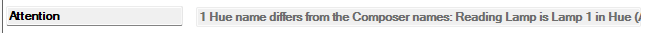
The Attention row a few seconds after a device was renamed in Composer: 1 Hue name differs from the Composer names: …, naming the Composer name, the Hue name and the two actions that resolve it.
If a light is deleted from the bridge in the Hue app, or replaced by a new one (which Hue treats as a new light), then its Hue Light device stays in the project and reads Status Gone from the Hue bridge since 2026-10-22 09:15; re-link or Forget with Online Offline; its tile is disabled, the bridge's Lights counts it as 1 missing and Attention reads 1 light missing from the bridge: Porch #12 (device 2051, since 2026-10-22) (Re-link Device To Light or Forget Light). Programming, Advanced Lighting Scenes and Navigator pages still refer to the device, so nothing of yours is lost. The same happens when a light is deleted by mistake in the app and added again a minute later: Hue gives it a new identity, so the device reads Gone and the re-added light appears as new with a hint, as below; re-link it, do not add it.
When the replacement light has been added in the Hue app it shows up as a new light, and the driver notices that it looks like the missing one (the same radio hardware, which a re-added light keeps, or the same name): 1 new light on the bridge: Porch [Patio] #53 (looks like Porch #12, device 2051; re-link?) (Add Light or Import All New Lights). Do not add it as a new device; re-point the old one:
Porch (device 2051, gone since 10-22) (a device whose connection was removed is listed as Desk Lamp (device 2043, unbound since 10-21); lists use the short date). In Light, which lists every light that has no device at the moment (likely replacements first with their hint, lights whose device you deleted in Composer last), pick the replacement.Re-linked device 2051 (was Porch #12) to Porch [Patio] #53. The device keeps its name, room, connections and programming; its Status, Hue Light ID and capabilities now describe the new light and its tile works again. If the new light is named differently in Hue, Attention mentions the name difference (8.2). If the new light can do less than the old one (a white light in place of a colour one) the colour controls disappear from the tile, and programming that sets a colour on it does nothing.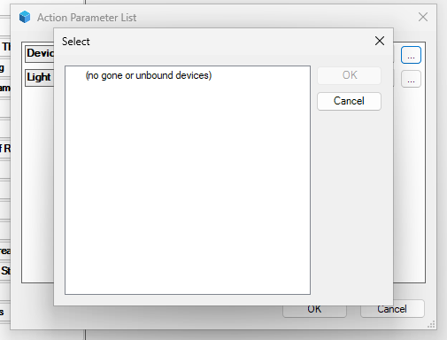
The Re-link Device To Light dialog with its Device list open. With a gone device in the project the list reads Name (device number, gone since date); here there is none, so it holds only (no gone or unbound devices).
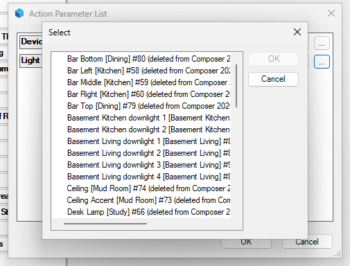
The same dialog with its Light list open: every light that has no device at the moment, likely replacements first with their (looks like …; re-link?) hint, lights whose device was deleted from Composer last, marked with the date.
If the light comes back under its old identity (for example you restored a Hue backup) then the driver notices and the device is simply linked again; you do nothing. If the light is gone for good and you do not want the device either, use Forget Light (8.5) and then delete the device in Composer. A gone device is never dropped by the driver itself. Refusals: Not re-linked: pick a device and a light (an empty row), Not re-linked: Porch #53 is already linked to device 2060 (the light you picked already has a device), Not re-linked: device 2051 is already linked to Porch #53 (the device you picked was re-linked meanwhile, usually a remembered choice; open the Device list again), Not re-linked: device 2051 is not a registered light (the device is not one the bridge manages) and Not re-linked: light … is not on the bridge (connect the event stream and try again) (the list was stale). The Device list says (no gone or unbound devices) when there is nothing to re-link.
If you delete a Hue Light device in Composer then the bridge is told at once: Lights ends in …, 1 deleted (after deleting most of them it reads, for example, 47 on bridge, 1 imported, 0 new, 0 missing, 0 unbound, 46 deleted) and Attention stays None, because deleting in Composer is a deliberate act. The driver remembers the deletion:
skipped 1 deleted in Composer (Add Light re-creates one): Bar Left #58 (deleted 2026-10-22). A bulk import will therefore never quietly bring back a device you removed.Bar Left [Kitchen] #58 (deleted from Composer 2026-10-22). Picking it creates a fresh device (a new device for Control4, so programming that pointed at the old one has to be redone) and clears the memory of the deletion.If you deleted a device while the controller was off or the driver was not running then the driver finds out at its next start and treats it the same way, with one rare exception: when no Hue Light at all is left in the project at that moment the driver cannot tell a deletion from a missing answer and lists the device as 1 unbound device: … instead; Forget Light on it clears that.
Forget Light is the deliberate way to release a device from its Hue light without deleting anything. Its Device list holds every managed device as Vanity 3 #92 (device 1130); a device that is not in its normal state carries its state after the bracket, Porch #12 (device 2051) gone or Desk Lamp #12 (device 2043) unbound. On OK, Last Action reads Forgot Vanity 3 #92 (device 1130): unbound and left in the project for you to delete; the Hue light is listed under Add Light again. The device stays in the project with Status Forgotten by the bridge (was Hue light Vanity 3 #92). Delete this device in Composer, or bind it again and use Link Devices, its connection to the bridge removed and its tile disabled; delete it in Composer when you are ready. The Hue light is available in Add Light and counted as new again. The same can be started from the device itself with its Forget This Light action. An empty choice answers Not forgotten: pick a device first.
Which to use: delete the device without Forget when you want the light gone from Control4 for good (a bulk import will not bring it back); Forget and then delete when you want to import the light afresh, for example into another room; Re-link when you are replacing the light and want to keep the device.
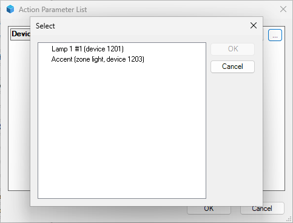
The Forget Light dialog: every managed device as Name #number (device number); a gone or unbound device carries that word at the end of its entry.
Occasionally a Hue Light device exists that the bridge does not manage: one added by hand from the Items pane, one that was Forgotten and that you want back, or every light after the bridge device itself was deleted and re-added (which this manual tells you never to do). Such a device reads Status Not bound to a Hue Bridge. The way in is a connection, and sometimes one click:
Vanity 3 (Hue color lamp) and nothing needs clicking; Link Devices then only answers All 47 bound devices are registered, which is success. If that light was meanwhile imported as another device, the bridge adopts nothing and Attention reads 2 devices claim Hue light Vanity 3 #92: 1130 and 1144 (Forget Light on one of them); Link Devices says the same in its own words, … announces Vanity 3 #92, which device 1144 holds (Forget Light on one of them). Forget one of the two and delete it. If the remembered light is no longer on the bridge, Link Devices adopts the device anyway and ends its line with (not on the bridge: marked gone); it then reads Gone and 8.3 applies.Bound; waiting for the bridge after the connection. On the bridge, click Link Devices: the device is matched by name to a Hue light that has no device yet, and the name must be exactly the same and unique. Last Action reads Linked 1 device: Vanity 3 (device 1034) to Vanity 3 [Master Bathroom] #92 by name | Scenes: All 2 bound scene devices are registered; with nothing to do, All 47 bound devices are registered, or No devices are bound to this bridge. A device adopted by its remembered identity is reported in the same way, with by its and the driver's word for the Hue identity in place of by name.If the name matches nothing then Last Action reads not linked 1: Hue Light (device 1034): no unimported Hue light has that name; rename the device in Composer to the Hue light's exact name and run Link Devices again: rename the device in the tree to the exact Hue name and click again. If two Hue lights share that name, … 2 unimported Hue lights have that name; rename the device in Composer to one Hue light's exact name … (rename one of them in the Hue app first). If two bound devices carry the same name, … 2 bound devices share that name; rename one in Composer and run Link Devices again. Not linked: the bound-device lookup failed (see the Lua output) means Composer's connection list was not available at that moment; try again. Linking never moves the device: it stays in whatever room it is in.
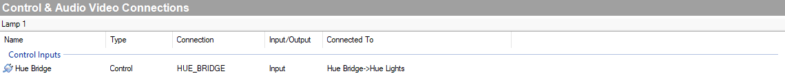
The Connections view of a Hue Light, upper pane Control & Audio Video Connections. The row to look at is the device's Hue Bridge input under Control Inputs, whose Connected To column reads Hue Bridge->Hue Lights: it is connected to the bridge's Hue Lights output. Devices the bridge creates come connected like this; a hand-added one gets this row filled by dragging the bridge from the lower pane, HUE_BRIDGE Output Devices, onto it.
If you remove that connection on a managed device then the bridge counts it as 1 unbound, Attention reads 1 unbound device: Desk Lamp #12 (device 2043) (bind it to this bridge in Composer, or Forget Light) and the device reads Not bound to a Hue Bridge; connect it again and it resumes by itself, no click needed. A device connected to a second Hue Bridge device by mistake reads Bound; waiting for the bridge for ever; delete that second bridge rather than link anything to it.
If two devices both claim the same Hue light (possible after copying devices around) then neither is changed and Attention reads 2 devices claim Hue light Desk Lamp #12: 2043 and 2051 (Forget Light on one of them): Forget one of the two and delete it.
Covered in chapter 4: the driver reconnects by itself and does a full read when the bridge returns. Expect Event Stream to read Disconnected: …. Reconnecting in … s meanwhile; nothing is needed from you unless the bridge's address changed. A bridge that reboots or updates its firmware closes the feed itself: Event Stream reads Disconnected: server closed the stream (HTTP 200). Reconnecting in 1 s and reconnects when the bridge is back. A light that updates its firmware needs nothing either; a capability it gains (colour, say) is picked up at the next full read.
After a controller restart everything reconnects by itself: the lights and scenes announce themselves to the bridge, Lights reads 47 imported alone until the first full read, and within seconds of Connected since every tile and colour control is back. Nothing to click.
Disconnected: HTTP 401 or 403. Reconnecting in … s over and over (one of the two codes, whichever the bridge answers) and Test Connection says Test failed: key rejected (HTTP 401 or 403). Re-pair with Pair Bridge. Press the link button and click Pair Bridge (Forget Pairing first is optional). The lights and scenes you then add back in the Hue app normally come with new identities, so after the first full read every Hue Light device reads Gone from the Hue bridge since … and you re-point each with Re-link Device To Light (the hints by name make each one quick, but it is one dialog per device; for 47 lights that is 47 dialogs) and each scene device with Re-link Scene. Your Control4 programming survives.Gone from the Hue bridge … need Re-link Device To Light. If the restored bridge no longer accepts the pairing, press the link button and Pair Bridge. Expect few re-links, possibly none; read Lights and Attention rather than assume. Note that a Composer project backup does not back up the Hue bridge; use the Hue app's backup for that.Test failed: bridge reports ID 001788fffe456def, expected 001788fffe123abc. Press the link button and click Pair Bridge (Forget Pairing first is optional; it only blanks the rows); the devices then read Gone and you re-link each to its light as above. Taking a replacement bridge over automatically is not supported in this version.Where things are kept: the pairing key, the list of which device is which light or scene, the memory of deleted devices and the room mappings are all stored on the Hue Bridge device on the controller. Each Hue Light and Hue Scene device also remembers its own Hue identity, name and model. Whether the bridge's store comes back when a project is restored from a Composer backup, or moved to a replacement controller, has not been verified; the devices' own memories travel with the project. So after a restore or a controller replacement:
Not paired: press the link button, then run Pair Bridge, press the link button and click Pair Bridge. If it says Paired, nothing was lost on that side.Connected since and read Lights. If it shows all your devices as imported, you are done.All 47 bound devices are registered or a Linked … line). A device reading Not bound to a Hue Bridge needs its connection made again first (8.6).None; use Map Rooms By Name, click Map Rooms By Name and fix the rest with Set Room Mapping. Programming, rooms and names are Composer's and come back with the project.A Hue scene is a saved look for one room or zone. The driver can show any scene as a Hue Scene device, a dimmer in a Control4 room: ON plays (recalls, in Hue's word) the scene on the bridge, OFF turns the scene's Hue room or zone off, the slider brightens or dims the room or zone while keeping the scene's look, and the device follows what happens in Hue. Hue creates about seven default scenes per room, so scenes are never imported automatically; you pick the ones you want.
Scenes reads 125 on bridge, 3 imported, 0 missing, 0 unbound, 0 deleted: the same fields as Lights (chapter 7) without new.
| Field | Meaning | What to do |
|---|---|---|
125 on bridge | Ordinary scenes on the bridge (smart scenes are not counted). | Nothing. |
3 imported | Hue Scene devices the bridge is managing. | Nothing. |
0 missing | Devices whose scene was deleted in Hue (the device reads Scene deleted in Hue). | Re-link Scene or Forget Scene (9.8). |
0 unbound | Devices whose connection to the bridge was removed. | Connect it again, or Forget Scene. |
0 deleted | Scene devices you deleted in Composer; remembered so that Add All Scenes Of Room does not bring them back. | Nothing, or Add Scene to re-create one. |
Before the first full read it says 0 imported.
Add Scene creates one scene device. Its dialog has two rows:
Room: Scene, for example Kitchen: Relax; a zone's scenes as Bedside Lights (zone): Nightlight; a scene that belongs to the whole home rather than a room as (all lights): Bright; a scene that Hue plays as slowly changing colours ends in (dynamic), for example Living Room: Sunset (dynamic); a scene whose room was deleted in Hue as Old Room (deleted in Hue): Relax; scene devices you deleted in Composer come last as Patio: Ibiza (deleted from Composer 2026-10-21). When every scene is imported the list holds (every scene on the bridge is imported); before the bridge has been read, (no scenes fetched yet; connect the event stream).(mapped room) first, then Floor / Room, as in Add Light. Pick (mapped room), like any other entry, to use the Room Mappings entry of the scene's Hue room or zone.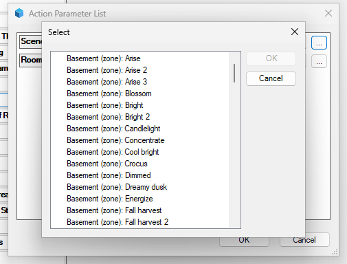
The Add Scene dialog with the Scene list open: each entry is Room: Scene, zones marked (zone), dynamic scenes marked (dynamic).
Click OK. Last Action reads Added Nightlight to Master Bedroom (device 1132). If you pick (mapped room) for a scene whose Hue room or zone is unmapped then nothing is created: Not added: Nightlight: Hue room Bedside Lights (zone) not mapped; pick a room, or Set Room Mapping first; a whole-home scene has no room to map, so with (mapped room) it answers Not added: Bright: not in a Hue room; pick a room, or Set Room Mapping first, and a scene of a room mapped to a deleted Control4 room Not added: Relax: Hue room Kitchen mapped to a Control4 room that no longer exists; pick a room, or Set Room Mapping first: pick a room explicitly. Other refusals: Not added: pick a scene first, Not added: Relax is already imported (device 2061), Not added: scene … is not on the bridge (Refresh Scenes and try again), Not added: Control4 room 1019 no longer exists. The dialog remembers your last choices, so re-open both lists each time.
Names. A room scene's device is named like the scene alone, for example Relax in the Kitchen; a zone scene's device carries the zone's name in front, for example Bedside Lights Nightlight, because zones have no Control4 room of their own and the name has to carry the context. As with lights, the name is set once and is then yours.
Add All Scenes Of Room creates a device for every scene of one Hue room or zone that has none yet, into the room it maps to. Its one row, Hue Room, lists every Hue room and zone that has scenes, with its mapping and counts: Kitchen → Kitchen (7 scenes), Bedside Lights (zone) → Master Bedroom (5 scenes, 1 imported), Attic → (unmapped) (6 scenes). The Hue room must be mapped: an unmapped one is refused with Not added: Hue room Attic not mapped; Set Room Mapping first, and one mapped to a deleted Control4 room with Not added: Hue room Attic mapped to a Control4 room that no longer exists; Set Room Mapping first. An empty row answers Not added: pick a Hue room first; a remembered choice whose room has lost its scenes or has left the bridge since, Not added: Attic has no scenes or Not added: Hue room … is not on the bridge (connect the event stream and try again); open the list again.
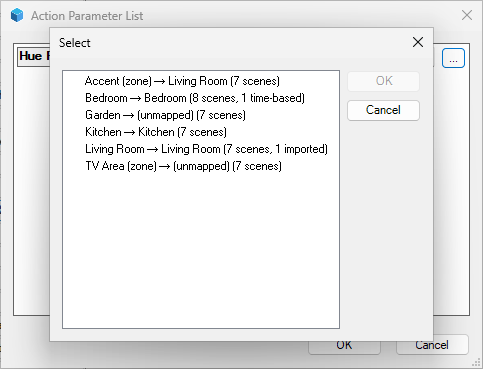
The Add All Scenes Of Room dialog: each Hue room or zone with its mapping after the arrow and, in brackets, how many of its scenes exist and how many are imported.
Last Action reads Added 7 scenes of Kitchen to Kitchen: Bright (device 2061), Concentrate (device 2062), Dimmed (device 2063), Energize (device 2064), Nightlight (device 2065), Read (device 2066), Relax (device 2067); on a second run No new scenes in Kitchen (7 on bridge, 7 imported). Scene devices you deleted in Composer are skipped and listed: Added no scenes; skipped 1 deleted in Composer (Add Scene re-creates one): Ibiza (deleted 2026-10-21). While it runs, other clicks answer Busy: adding scenes; try again in a moment, and during a full read of the scenes Busy: resyncing scenes; try again in a moment. After adding scenes, choose File » Refresh Navigators.
Off or On; developer use only.Hue scene Nightlight in Bedside Lights (zone) (the scene and its Hue room or zone; a whole-home scene reads in Home (bridge home)). Right after a restart a device that remembers its scene shows the bare scene name, Nightlight, for a moment until the bridge answers. The other texts are in 9.8 and 9.9.Nightlight; Hue Room: Bedside Lights (zone); Hue Scene ID: the scene's short code on the bridge (a run of letters and digits) and the start of its long identifier, for example #AbCdEfGhIjKlMnOp (0f3a2b1c…); blank until the bridge has linked the device.As set in Hue (default) lets Hue decide: a scene marked dynamic plays its slowly changing colours, any other is set once. Static always sets the scene once, a predictable look. Dynamic always plays the changing colours. Change it, click the row's Set button, and the next ON uses it.Online while the device is connected and its scene exists on the bridge, Offline otherwise (the tile is then disabled), blank for a moment while the bridge has not answered yet.Forgotten by the bridge after a Forget.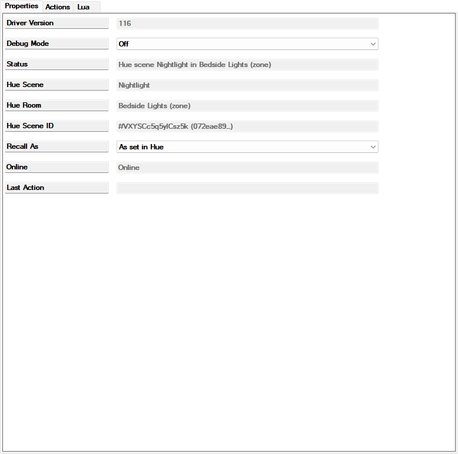
The Properties page of a Hue Scene device (Bedside Lights Nightlight). Recall As is the one row you may change; Status names the scene and its zone, in Bedside Lights (zone).
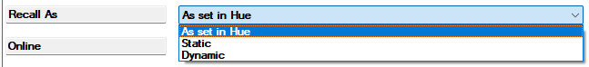
The Recall As row with its three choices: As set in Hue, Static, Dynamic. Click Set after choosing, or the change never reaches the driver.
Adopt Hue Name renames the device to the name the bridge would give it today (the scene's name, with the zone's name in front for a zone scene): Renamed device 1141 to Bedside Lights Read; while unlinked, Not renamed: no Hue name known yet (the bridge has not configured this scene). Forget This Scene asks the bridge to release the device, exactly like a light's Forget This Light; its Last Action reads Asked the bridge to forget this scene; its answer sets Status, or Not sent: not bound to a Hue Bridge when there is no bridge to ask.
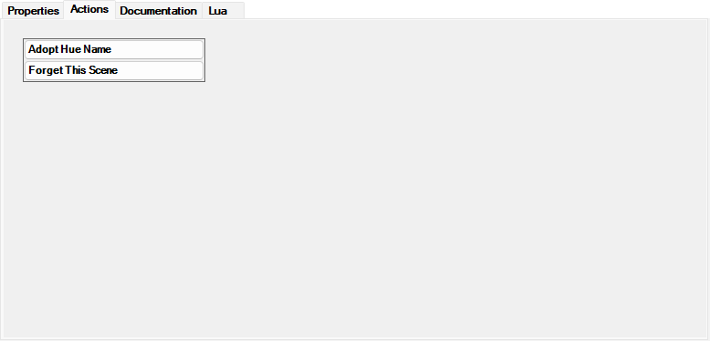
A Hue Scene device's Actions tab: Adopt Hue Name above Forget This Scene.
Patio: Ibiza (device 1138, gone since 10-21), or (no gone or unbound scene devices); Scene lists every scene without a device, as in Add Scene. Result: Re-linked device 1140 (was C4 Test Scene) to Bedside Lights (zone): Read. Because the device keeps its old name, Attention will then mention the name difference; Adopt Hue Name on the device fixes it in one click. Refusals mirror the light's: Not re-linked: pick a device and a scene, Not re-linked: device 1140 is already linked to …, Not re-linked: … is already linked to device …, Not re-linked: device … is not a registered scene, Not re-linked: scene … is not on the bridge (Refresh Scenes and try again).Kitchen: Relax (device 2061); result Forgot Ibiza (device 1138): unbound and left in the project for you to delete; the Hue scene is listed under Add Scene again. The device reads Forgotten by the bridge (was Hue scene Ibiza). Delete this device in Composer, or bind it again and use Link Devices; delete it in Composer.Scenes refreshed: 125 on bridge, 3 imported, 0 missing, 0 unbound, 0 deleted, or Scene refresh failed: … when the bridge did not answer (wait for Connected since and click again).If a scene is deleted in the Hue app then its device stays and reads Status Scene deleted in Hue since 2026-10-21 21:35; ON does nothing; re-link or Forget with Online Offline; tapping ON leaves the tile off (the bridge's Lua output notes Recall failed: HTTP 404 (scene gone?) if the deletion had not yet reached the driver); Attention reads 1 scene missing from the bridge: Ibiza (device 1138, since 2026-10-21) (Re-link Scene or Forget Scene). Re-link it to another scene, or Forget it and delete the device. If a scene is renamed in Hue then only Attention notices, naming the Composer name and the name the bridge would give the device today; for the zone scene Nightlight renamed to Night Light in the Hue app it reads 1 Hue scene name differs from the Composer names: Bedside Lights Nightlight is Bedside Lights Night Light in Hue (Adopt Hue Names or Accept Names As They Are). Editing a scene's colours, brightness or dynamics in the Hue app needs nothing in Control4; the next ON plays the new look. Copying a scene to another room in the Hue app creates a new scene; the device keeps following the original. A scene created in the Hue app appears in the Add Scene list by itself.
A scene device that lost its connection reads Not bound to a Hue Bridge and is counted as 1 unbound, with Attention 1 unbound scene device: Relax (device 2061) (bind it to this bridge in Composer, or Forget Scene); connect it again in Connections (to the bridge's Hue Lights output, the same as a light) and it resumes by itself. A device that remembers its scene is adopted the moment it is connected, exactly as in 8.6; two devices remembering the same scene give 2 devices claim Hue scene Relax: 2061 and 2070 (Forget Scene on one of them). A bare scene device reads Bound; waiting for the bridge and is matched by Link Devices by the scene's plain name, Nightlight, not the zone-prefixed Bedside Lights Nightlight; after linking, Adopt Hue Name on the device adds the zone's name. The scenes' half of the Link Devices result reads Linked 1 device: … by name, All 2 bound scene devices are registered or No scene devices are bound to this bridge.
To Control4 a Hue Scene device is a dimmer. In programming, turn it on to play the scene, off to turn the room or zone off, or set a level to brighten or dim the room or zone; schedule it, put it behind a keypad button, or include it in an Advanced Lighting Scene next to other lights (the Hue lights themselves can be members too). Its on state follows the rule in 9.4, so a Hue scene played from the Hue app is visible to Control4 as the scene being on, and a dim in the Hue app as a new level. Chapter 11 has the details.
Each Hue Light is a Control4 light driven by the bridge. You never configure it; the bridge tells it what its light can do and what state it is in. Select one in the tree and open its Properties tab:
| Property | What it shows |
|---|---|
| Driver Version | The build number; the same as the bridge's after an update. |
| Debug Mode | Off or On; developer use only. |
| Status | Left Bedside Light (Hue color lamp) in normal use: the Hue name and the light's model (Porch (unknown model) until the model is known). Otherwise: Not bound to a Hue Bridge, Bound; waiting for the bridge, Gone from the Hue bridge since …; re-link or Forget or Forgotten by the bridge (was Hue light …). Delete this device in Composer, or bind it again and use Link Devices. Chapter 8 covers each. |
| Hue Light ID | #46 (e0e51794…): the light's number on the bridge (the same number the bridge's lists show after the name) and the start of its long identifier. Blank until the bridge has linked it; a device that remembers its identity but has not heard the number yet shows the long identifier alone for a moment. |
| Hue Name | The light's name in the Hue app. The device's name in Composer starts out the same and is then yours; compare the two when Attention mentions a difference. |
| Model | The light's model name as Hue reports it, for example Hue color lamp or Hue white lamp. |
| Online | Online when the bridge can reach the light; Offline when the light has no power, or the device is not bound, gone or forgotten; blank while the bridge has not said either way yet (for ever, harmlessly, for a light that uses Wi-Fi or Matter instead of Zigbee). While Offline the tile is disabled on Navigators. |
| Hue Room | The Hue room the light belongs to, for example Master Bedroom; blank for a light in no Hue room. It follows a move in the Hue app within seconds; moving the device to another Control4 room does not change it. |
| Last Action | The result of the last click on this device's Actions tab, or Forgotten by the bridge after a Forget. |
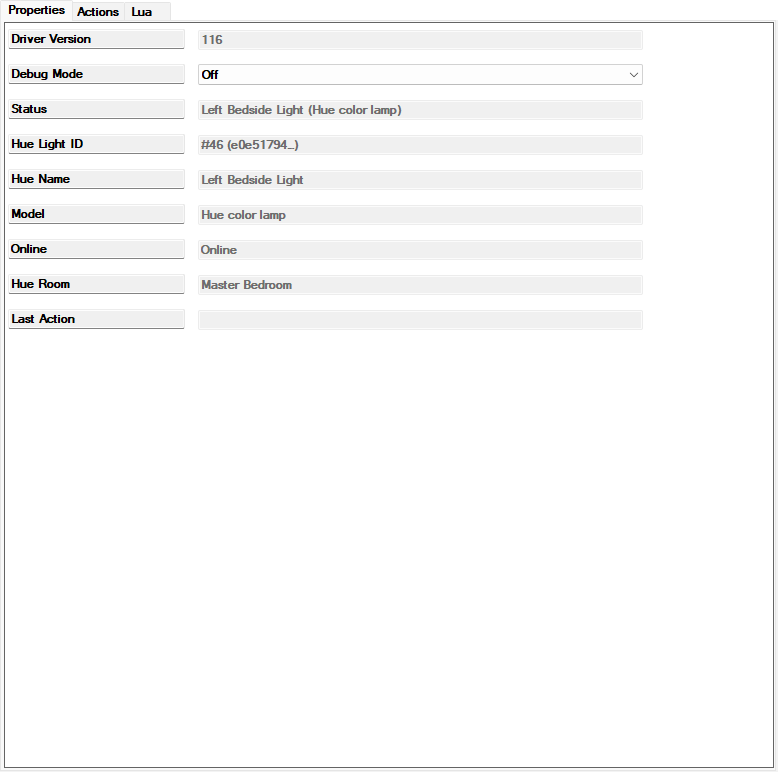
The Properties page of a Hue Light (Left Bedside Light): Status, Hue Light ID, Hue Name, Model, Online and Hue Room are filled in by the bridge; Debug Mode is the only row you could change.
Actions. Adopt Hue Name renames this device in Composer to its Hue name (Renamed device 1073 to Downlight 4; Not renamed: no Hue name known yet (the bridge has not configured this light) while unlinked). Forget This Light asks the bridge to release this device (Asked the bridge to forget this light; its answer sets Status; Not sent: not bound to a Hue Bridge when there is no bridge to ask); see 8.5.
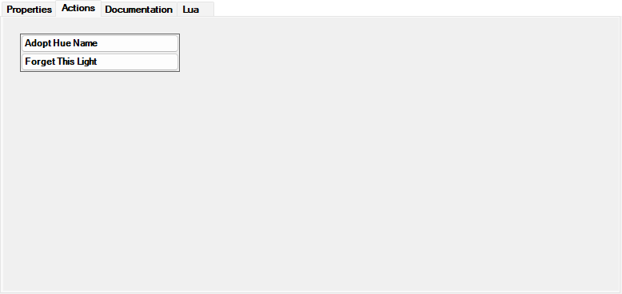
A Hue Light device's Actions tab: Adopt Hue Name above Forget This Light.
Colour and colour temperature appear on Navigators only when the light supports them; the bridge tells each device what its light can do, so a white-only light shows no colour controls at all. On a colour light the Navigator offers both a colour wheel and a colour temperature control; on a white ambiance light only the temperature control; on a white-only light neither. The temperature range is the light's own, typically about 2000 to 6500 K. Brightness is shown in whole percents and settles on the level Hue reports back; the lowest level a light can hold is a little above zero, and only 0 % means off. A colour or temperature set while the light is off is kept and applied at the next turn-on. When the device cannot act (not bound, waiting, gone or forgotten) it drops commands quietly and its Status says why.
Once imported, a Hue Light is an ordinary Control4 dimmer to everything in the project, and a Hue Scene an ordinary dimmer whose level is its room or zone's brightness. This chapter says what that means in practice.
Each Hue Light and each Hue Scene appears on its room's Lighting page with a tile and a slider. For a Hue Scene a tap plays the scene or turns its room or zone off and the slider dims the whole room or zone (9.4); the rest of this paragraph is about lights. Tap the tile for on and off; the slider sets brightness, and the light responds within about a second. A tap that turns a light on, and "Turn On" in programming, always mean 100 %, not the level the light had before or the power-on level set in the Hue app; use the slider or a programmed level for anything else. The slider settles on the level Hue reports back, in whole percents; 0 % is off and any other level is on. A tile is disabled while the light is unreachable (chapter 10, Online). Changes from the Hue app or a Hue dimmer switch show on the tile within a second or two.
In Composer's Programming view a Hue Light offers the standard actions and events of any Control4 dimmer: turn on, turn off, toggle, set or ramp to a level, and events when it turns on or off or its level changes. The events fire for changes made in the Hue app, by a Hue dimmer switch or by a Hue automation too, because the device follows the bridge; a "when the Porch light turns on" program runs however the light was turned on. A keypad button connected to a Hue Light works as with any Control4 dimmer: a tap switches it, a hold dims it, and the LED follows the light's state, including changes made on the Hue side; the next section has the setup. A Hue Scene is a dimmer: on plays the scene, off turns the room or zone off, and a level brightens or dims the room or zone (or, while it is off, plays the scene at that level); its on event fires when the scene is played, from Control4, a keypad or the Hue app, its off event when its room or zone turns off or another scene of it is played, and its level events follow the room or zone's brightness, including dims made in the Hue app (9.4). A ramp time given to a scene becomes the fade Hue uses to play it.
A Hue bulb has to stay powered, so the wall switch that feeds it cannot switch its load. A Control4 Switch V2 or Essential Switch can instead run as a two-button keypad whose buttons drive the Hue Light, the way the stock Philips driver did:
What the buttons do:
| Button | Tap | Hold (longer than about half a second) |
|---|---|---|
| Top | On to the On preset (default 100 %) over the click rate (default 250 ms). | Ramps up over the hold rate (default 5 seconds for the full range); letting go stops the light at the level reached. |
| Bottom | Off over the click rate. | Ramps down to the minimum over the hold rate; letting go stops it. |
| Toggle | On if the light is off, off if it is on. | Ramps up while off, down while on; letting go stops it. |
The On preset and the four rates (click up and down, hold up and down) are remembered per light. They change through the light's proxy settings where Composer offers them for a dimmer; where it does not, the defaults apply. The preset is a keypad matter only: "Turn On" in programming and a tap on the tile still mean 100 %.
A Hue Scene device on a keypad is the usual way to run a Hue room or zone from a wall switch:
| Button | Tap | Hold (longer than about half a second) |
|---|---|---|
| Top | Plays the scene. | Brightens the scene's lights while held and stops where you let go. The scene's colours and the differences between its lights are kept, as with Hue's own dimmer switch. Held while the room is off, the scene starts at its dimmest and brightens from there. |
| Bottom | Turns the scene's room or zone off. | Dims the scene's lights while held and stops where you let go; nothing happens while the room is off. |
| Toggle | Plays the scene if it is off, turns the room or zone off if it is on. | Brightens while off, dims while on. |
The scene's tile and keypad LEDs follow its on state (9.4): a dim from its buttons, its slider or the Hue app keeps them on, although Hue itself no longer calls the scene active once its lights have been dimmed. The scene reads off again when its room or zone is turned off (from anywhere, including the Hue app), or when another scene of the same room or zone is played. The hold rates (default 5 seconds for the full range) are remembered per scene device and change through its proxy settings where Composer offers them.
The keypad's LEDs: the driver tells every connected keypad button whether the light or scene is on, whenever that changes, including changes made in the Hue app. By default a top button is lit blue while it is on and a bottom button is lit blue while it is off; the colours change in the device's button LED settings in Composer. The switch's own LED Behavior decides whether the button follows the device: Push/Release only lights it while pressed, so pick the switch's option that follows the connected device.
Hue Lights and Hue Scene devices can be members of Control4's own Advanced Lighting Scenes (the Lighting Scenes agent). A lighting scene sets a Hue Light's level, and its colour or colour temperature where the light supports them, with the scene's ramp time; a Hue Scene is a dimmer member with a level: a level above 0 plays the Hue scene at that brightness while its room or zone is off, or brightens or dims the room or zone to it, keeping the scene's look, while it is on; 0 turns the Hue room or zone off. A "stop ramp" from a lighting scene cannot stop a Hue light in mid-fade, because Hue has no such command; the driver reports the last level it knew, and the next report from the bridge corrects the tile.
A room Off, a house Off or a lighting scene sends one request to the bridge per Hue light, and the driver paces them at ten a second, the most the bridge allows across everything that talks to it. A room with 47 Hue lights therefore takes about five seconds to finish, the lights going off one after another in the bridge's order rather than all at once; a room with a handful of lights is done within a second. The fast way to switch a whole Hue room or zone off is a Hue Scene device: its OFF is one request to the bridge for the whole room (9.4). Scene devices of several rooms turned off at once queue behind each other at about one request a second.
After importing lights or adding scenes, choose File » Refresh Navigators in Composer so the touch screens and the app show the new tiles. Renaming or moving a device needs the same refresh to show on Navigators.
| Where | Text | Meaning and what to do |
|---|---|---|
| Bridge Status | Enter the bridge IP address | No valid address set, or an invalid one was set while paired (chapter 4, step 2). Type it into Bridge IP Address and click Set. |
| Bridge Status | Not paired: press the link button, then run Pair Bridge | Address known, no pairing. Press the link button, then Pair Bridge. |
| Bridge Status | Press the link button on the bridge, then run Pair Bridge again | The button was not pressed in the 30 seconds before the click. Press it and click again. |
| Bridge Status | Pairing failed: Bridge not reachable: … | Nothing answered at that address. Check the address in the Hue app and the network. |
| Bridge Status | Pairing failed: Pairing request failed: … | The bridge answered the first question but not the pairing request. Try again; if it persists, check that the address really is a Hue bridge. |
| Bridge Status | Pairing failed: bridge error … | The bridge refused with an error of its own. Try again after a moment; restart the bridge if it persists. |
| Bridge Status | Test failed: key rejected (HTTP 401 or 403). Re-pair with Pair Bridge | The bridge no longer accepts the pairing (reset, or the key removed in the Hue app). Press the link button, Pair Bridge. If the bridge was reset, expect every device to read Gone afterwards and re-link them (8.8). |
| Bridge Status | Test failed: bridge reports ID …, expected … | A different bridge answers at the address. Pair with it (Forget Pairing first is optional), knowing that every device will then read Gone until re-linked (8.8); or correct the address. |
| Bridge Status | Test failed: … | Network error. Bridge off, or its address changed (chapter 4); nothing between controller and bridge may block the connection. |
| Bridge Status | Stored credentials readable but differ from memory; see Lua output | After Reload Credentials: the stored pairing is not the one in use. Run Test Connection; if it says Test OK nothing is wrong, otherwise press the link button and Pair Bridge. |
| Bridge Status | Pinning check FAILED: public CAs are trusted too; see Lua output | After Check CA Pinning: the driver's certificate check is looser than intended. The driver still works; tell the developer, do not re-pair. |
| Bridge Status | Set the Diagnostic Server property first (host:port) | Connection Test was run against the Diagnostic Server with that property blank. A developer-only action; nothing to do. |
| Event Stream | Disconnected: watchdog: no data for 300 s. Reconnecting in 1 s | Normal in a quiet house: nothing changed for five minutes, so the feed is reopened. Nothing to do. |
| Event Stream | Disconnected: server closed the stream (HTTP 200). Reconnecting in 1 s | The bridge ended the feed itself. Once every Stream Timeout (s) it is the driver's own reopening; repeating within seconds means the bridge is rebooting or updating. Wait. |
| Event Stream | Disconnected: transfer error 28: …. Reconnecting in 60 s (repeating) | The bridge is unreachable or moved. Check power and address. |
| Event Stream | Disconnected: HTTP 401 or 403. Reconnecting in … s (repeating) | The pairing was rejected. Press the link button and Pair Bridge; if the bridge was reset, expect every device to read Gone and re-link them (8.8). |
| Event Stream | Disconnected: aborted, Disconnected: oversized line in stream | A broken transfer. The driver reconnects by itself. |
| Event Stream | Stopped | You clicked Disconnect Event Stream or Forget Pairing, a Connection Test is running (it restarts the feed when done), or an invalid Bridge IP Address was set while paired. Click Connect Event Stream, correct the address, or pair. |
| Event Stream | Not paired / Waiting for IP address | Finish chapter 4. |
| Stream Address | … (shared queue with commands: no octet below 8 to pad; stream timeout capped at 60 s) or … (shared queue with commands: self-check via … failed: …; stream timeout capped at 60 s) | The feed shares the commands' connection queue (chapter 3): commands can wait up to a minute behind it, and Event Stream shows a fresh Connected since every minute. Give the bridge an address with a number below 8 in the router, then set it in Bridge IP Address; or live with it. |
| Attention | 2 new lights on the bridge: … (Add Light or Import All New Lights) | Lights without a device. Import them, or ignore the line. |
| Attention | 1 light missing from the bridge: … (Re-link Device To Light or Forget Light) | A light was deleted or replaced in Hue. See 8.3. |
| Attention | 1 unbound device: … (bind it to this bridge in Composer, or Forget Light) | Its connection to the bridge was removed. Connect it again in Connections, or Forget it (8.6). |
| Attention | 2 devices claim Hue light …: … (Forget Light on one of them) | Two devices for one light. Forget one, delete it. |
| Attention | 1 Hue name differs from the Composer names: … (Adopt Hue Names or Accept Names As They Are) | A rename on one side. See 8.2. |
| Attention | 1 room mapping points at a Control4 room that no longer exists: … (Set Room Mapping) | A Control4 room was deleted. Map the Hue room to another room, or to (no mapping). |
| Attention | 1 light offline for more than 24 h: … | The light has had no power for a day (counted from the driver's start), or is broken. Check the lamp or the wall switch. |
| Attention | 1 scene missing from the bridge: … (Re-link Scene or Forget Scene) | The scene was deleted in Hue. Re-link Scene or Forget Scene (9.8). |
| Attention | 1 unbound scene device: … (bind it to this bridge in Composer, or Forget Scene) | The scene device's connection was removed. Connect it again, or Forget Scene (9.9). |
| Attention | 2 devices claim Hue scene …: … (Forget Scene on one of them) | Two devices for one scene. Forget Scene on one, delete it. |
| Attention | 1 Hue scene name differs from the Composer names: … (Adopt Hue Names or Accept Names As They Are) | A scene renamed in Hue, or its device renamed in Composer. See 9.8. |
| Last Action | Not paired | Every action except pairing needs a paired bridge first. |
| Last Action | Busy: importing; try again in a moment, Busy: resyncing; try again in a moment, Busy: adding scenes; try again in a moment, Busy: resyncing scenes; try again in a moment | An import or a full read is running. Wait a few seconds, up to a minute during a whole-house import. |
| Last Action | Not added: pick a light first, Not added: pick a scene first, Not added: pick a Hue room first, Not mapped: pick a Hue room first, Not mapped: pick a Control4 room or (no mapping), Not re-linked: pick a device and a light, Not re-linked: pick a device and a scene, Not forgotten: pick a device first | OK was clicked with an empty or placeholder choice. Open the list and choose. |
| Last Action | Not added: …: Hue room … not mapped; pick a room, or Set Room Mapping first | No default room for that light or scene. Pick a room in the dialog, or map the Hue room. |
| Last Action | Not added: …: no Hue room; pick a room, or Set Room Mapping first | The light is in no Hue room, so no mapping can apply. Pick a room in the dialog. |
| Last Action | Not added: …: not in a Hue room; pick a room, or Set Room Mapping first | A whole-home scene. Pick a room in the dialog. |
| Last Action | Not added: …: Hue room … mapped to a Control4 room that no longer exists; pick a room, or Set Room Mapping first, Not added: Hue room … mapped to a Control4 room that no longer exists; Set Room Mapping first | The mapping points at a deleted Control4 room. Set Room Mapping, or pick a room in the dialog. |
| Last Action | Not added: Hue room … not mapped; Set Room Mapping first, Not added: … has no scenes, Not added: Hue room … is not on the bridge (connect the event stream and try again) | Add All Scenes Of Room refusals: map the room first, or the remembered choice is stale; open the list again. |
| Last Action | Not added: … is already imported (device …) | It already has a device. Nothing to do. |
| Last Action | Not added: light … is not on the bridge (connect the event stream and try again), Not added: scene … is not on the bridge (Refresh Scenes and try again) | The list was stale. Wait for the feed, or Refresh Scenes, and try again. |
| Last Action | Not added: Control4 room … no longer exists | The room chosen in the dialog has been deleted. Pick another. |
| Last Action | Not added: AddDevice failed for … (see the Lua output), …; AddDevice failed for 2: … | Composer could not create the device. Check that hue_light.c4z (or hue_scene.c4z) is installed in the project (chapter 3), then try again. |
| Last Action | Import failed: …, …; stopped early: …, Scene refresh failed: … | The bridge could not be read. Wait for Event Stream to say Connected since and click again. |
| Last Action | Not re-linked: device … is already linked to … | The remembered Device choice was re-linked already. Open the Device list again. |
| Last Action | Not re-linked: … is already linked to device … | The light or scene you picked already has a device. Pick another, or Forget that device first. |
| Last Action | Not re-linked: device … is not a registered light, Not re-linked: device … is not a registered scene, Not forgotten: device … is not a registered light, Not forgotten: device … is not a registered scene | The device is not one the bridge manages (a stale choice). Open the list again. |
| Last Action | not linked 1: …: no unimported Hue light has that name; rename the device in Composer to the Hue light's exact name and run Link Devices again | See 8.6. |
| Last Action | not linked 1: … announces …, which device … holds (Forget Light on one of them) | Two devices remember the same light. Forget one, delete it (8.6). |
| Last Action | Linked 1 device: … (not on the bridge: marked gone) | The device's remembered light is no longer on the bridge. Re-link Device To Light (8.3). |
| Last Action | Not linked: the bound-device lookup failed (see the Lua output) | Composer's connection list was not available at that moment. Try again. |
| Last Action | …; not renamed 1: … (device …): no proxy id known, …: rename failed: … | Adopt Hue Names could not rename one device. Try again after a minute, or rename it by hand (F2). |
| Last Action | Not mapped: Control4 room … does not exist | The room chosen in Set Room Mapping has been deleted. Open the list again. |
| Last Action | No mapping for … to remove | You picked (no mapping) for a Hue room that had none. Nothing to do. |
| Last Action | Nothing mapped: no Hue rooms fetched yet (connect the event stream and try again), Not mapped: Hue room … is not on the bridge (connect the event stream and try again) | The bridge has not been read yet. Wait for Event Stream to say Connected since. |
| Last Action | Nothing mapped: no Control4 rooms found in the project, Room Audit unavailable: the project lookup returned nothing (see the Lua output), …; 1 not found in the project | Composer's project information was not available at that moment. Try again later. |
| Light Status | Not bound to a Hue Bridge | Connect it to the bridge in Connections (8.6). A device that remembers its light is adopted at once; a bare one needs Link Devices and its exact Hue name. |
| Light Status | Bound; waiting for the bridge | Connected but not yet linked. Link Devices, with the device named exactly like the Hue light; or wait a few seconds if the bridge is starting. For ever on a device connected to a second Hue Bridge: delete that bridge. |
| Light Status | Gone from the Hue bridge since …; re-link or Forget | See 8.3. |
| Light Status | Forgotten by the bridge (was Hue light …). Delete this device in Composer, or bind it again and use Link Devices | You (or the bridge's Forget Light) released it. Delete it, or connect it again; it is adopted the moment it is connected (8.6). |
| Light Status | Porch (unknown model) | Harmless; the model fills in at the next full read. |
| Scene Status | Not bound to a Hue Bridge, Bound; waiting for the bridge, Forgotten by the bridge (was Hue scene …). Delete this device in Composer, or bind it again and use Link Devices | The scene versions of the light rows above (9.9); Link Devices matches a bare scene device by the scene's plain name. |
| Scene Status | Nightlight (the bare name) with Online blank | The device remembers its scene and the bridge has not answered yet. Wait; Link Devices if it stays. |
| Scene Status | Scene deleted in Hue since …; ON does nothing; re-link or Forget | See 9.8. |
| A keypad button | Does nothing | In Connections check that the button's output is connected to the Hue Light's Top, Bottom or Toggle Button Link input (chapter 11), and that the light's Online reads Online: an unreachable light ignores buttons as it ignores the tile. |
| A Hue Scene tile on Navigators | On and off only, no slider or percentage | This build changes the scene device's type from a switch to a dimmer, and the controller loads the new type only when it starts. After updating the drivers, reboot the controller from System Manager (Composer's Restart Director? prompt alone does not load the new driver), then choose File » Refresh Navigators. |
| Bridge Lua output | Recall failed: HTTP 404 (scene gone?) | A scene tile was tapped ON and dropped straight back: the scene no longer exists on the bridge. Its device reads Scene deleted in Hue once the deletion has reached the driver; then 9.8. |
Connected since.Disconnected); the tile corrects itself when the feed returns, and the command is delivered then (chapter 4).Test Connection asks the bridge one question over the normal connection and reports in Status (chapter 4). It is the first thing to click when lights do not respond: a Test OK means the controller reaches the bridge and the pairing is good.
Connect Event Stream and Disconnect Event Stream start and stop the event feed by hand. Disconnect leaves Event Stream at Stopped and the lights frozen at their last state until you connect again; the driver reconnects by itself at its next start in any case. Normally not needed.
Connection Test runs the developer's connection experiment against the Target you pick in its dialog, Bridge or Diagnostic Server (the latter needs the Diagnostic Server property and a test server the developer provides). It stops the event feed, writes Connection test against bridge running; see Lua output and then a one-line verdict such as Connection test (bridge): stream OK, GET with stream open FAIL, concurrent 0/2, control OK to Status, and restarts the feed. It can hold the commands' connection for up to five minutes, during which the lights may not respond from Control4; run it only when the developer asks for the result, and not while the house is in use.
Reload Credentials checks that the stored pairing can be read back and reports in Status: Stored credentials readable and match memory is the good answer; No stored credentials means not paired; Stored credentials readable but differ from memory; see Lua output means the stored pairing is not the one in use (run Test Connection; pair again only if that fails); Stored credentials NOT readable although paired in memory; see Lua output would mean the controller's storage lost the pairing, in which case pair again. It never shows the key itself. Normally not needed.
Check CA Pinning confirms that the driver trusts only certificates issued for Hue bridges: it tries a public web site and expects to be refused. Pinning check passed: only Signify-signed certificates are trusted is the good answer; Pinning check inconclusive: … unreachable means the controller has no internet access at the moment, which is harmless for the driver; Pinning check FAILED: public CAs are trusted too; see Lua output means the check is looser than intended, the driver still works, tell the developer. Worth a click after a controller OS upgrade; otherwise normally not needed.
Debug Mode, Diagnostic Server, Dev Server and Stream Address are the developer's; leave them as they are unless asked.
| Action | Choices | One line | Reports in |
|---|---|---|---|
| Pair Bridge | - | Pair with the bridge at Bridge IP Address; press the link button first. | Status |
| Add Light | Light, Room | Create one Hue Light device in the chosen room, or in (mapped room). | Last Action |
| Import All New Lights | - | Create a device for every new light whose Hue room is mapped; skip lights with no mapped room (unmapped, mapped to a deleted room, or in no Hue room) and Composer-deleted ones, and list them. | Last Action |
| Re-link Device To Light | Device, Light | Point a gone or unbound device at another light, keeping name, room and programming. | Last Action |
| Link Devices | - | Take over connected Hue Light and Hue Scene devices the bridge does not manage, by remembered identity or exact name. | Last Action |
| Forget Light | Device | Release a device from its light; the device stays for you to delete, the light becomes importable again. | Last Action |
| Adopt Hue Names | - | Rename every differing light and scene device in Composer to its Hue name. | Last Action |
| Accept Names As They Are | - | Keep the Composer names; stop Attention from mentioning the current differences until the Hue name changes again. | Last Action |
| Set Room Mapping | Hue Room, Room | Map one Hue room or zone to a Control4 room, or to (no mapping). | Last Action |
| Map Rooms By Name | - | Map Hue rooms and zones to Control4 rooms of the same name; never overrides. | Last Action |
| Room Audit | - | List lights that are not in the Control4 room their Hue room maps to; nothing is moved. | Last Action |
| Add Scene | Scene, Room | Create one Hue Scene device in the chosen room, or in (mapped room). | Last Action |
| Add All Scenes Of Room | Hue Room | Create a Hue Scene device for every scene of one Hue room or zone that has none, in its mapped room. | Last Action |
| Re-link Scene | Device, Scene | Point a gone or unbound scene device at another scene. | Last Action |
| Forget Scene | Device | Release a scene device; it stays for you to delete. | Last Action |
| Refresh Scenes | - | Full read of the scene list from the bridge now. | Last Action |
| Test Connection | - | One question to the bridge. | Status |
| Connect Event Stream | - | Start the event feed by hand. | Event Stream |
| Disconnect Event Stream | - | Stop the event feed; Event Stream reads Stopped. | Event Stream |
| Connection Test | Target: Bridge or Diagnostic Server | The developer's connection experiment; can block commands for up to five minutes. Normally not needed. | Status |
| Reload Credentials | - | Check that the stored pairing is readable. Normally not needed. | Status |
| Check CA Pinning | - | Check that only Hue bridge certificates are trusted. Normally not needed. | Status |
| Forget Pairing | - | Remove the stored pairing and stop the feed; the address and the devices stay. Pair again afterwards. Optional before pairing with another bridge. | Status, Event Stream |
| Adopt Hue Name | Rename this device in Composer to its Hue name. |
| Forget This Light | Ask the bridge to release this device (same as the bridge's Forget Light). |
Keypad buttons on a Hue Light: tap top = on to the On preset, tap bottom = off, toggle = the other state, hold = dim up or down until let go. On a Hue Scene: top plays, bottom turns the room or zone off, toggle alternates, holds do nothing (chapter 11).
| Adopt Hue Name | Rename this device in Composer to the scene's name (zone name in front for a zone scene). |
| Forget This Scene | Ask the bridge to release this device (same as the bridge's Forget Scene). |
| Device | Property | Values |
|---|---|---|
| Hue Bridge | Bridge IP Address | Four numbers and dots, for example 192.168.1.50. |
| Hue Bridge | Stream Timeout (s) | 30 to 86400, default 600; capped at 60 on an address with no number below 8. |
| Hue Bridge | Stream Watchdog (s) | 0 to 3600, default 300; 0 switches it off. |
| Hue Scene | Recall As | As set in Hue (default), Static, Dynamic. |
| All three | Debug Mode | Off (default), On; developer use only. |
Every other property is written by the driver. Remember the Set button for all of these.
bind it to this bridge in Composer for making that connection and unbound for a device whose connection was removed. Devices the bridge creates are bound from the start.Gone and has to be re-linked.Gone from the Hue bridge (or Scene deleted in Hue); the bridge's Lights, Scenes and Attention count it as missing.Busy texts call it resyncing.Hue Bridge, Hue Light and Hue Scene drivers. Private, not for distribution.